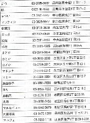

今春から、「月刊プロ麻雀」の出版社がブレイン スポーツ マガジン社となった。それにともなって装丁も内容も大幅にリニューアルされた。
そしてリニューアル号の０５．９月号は、８月号の倍、６nnの厚みがあった。（なんと分厚い！、いったいどんな記事が載っているのか）と思ったら、約半分は麻雀荘の住所がびっしり。要するに日本の麻雀荘の住所録だった。

麻雀荘に対するＰＲをかねているようで、別に面白い読み物記事ではない。しかしこれはなんとも貴重な資料。なにせ麻雀荘の届け出は都道府県単位なので、なかなか全体像は把握しにくい。しかしこれで一目瞭然。
９月号は東日本、10月号は西日本版であったが、すべてまとめるのに、たぶんものすごいエネルギーがいったと想像する。せっかくなので、都道府県単位で雀荘数だけピックアップすると、次のよう。
| 北海道 |
353 |
|
福井 |
100 |
|
静岡 |
325 |
|
岡山 |
155 |
|
熊本 |
157 |
| 青森 |
83 |
|
東京 |
2,089 |
|
愛知 |
825 |
|
広島 |
261 |
|
大分 |
103 |
| 岩手 |
75 |
|
神奈川 |
756 |
|
三重 |
117 |
|
山口 |
152 |
|
宮崎 |
96 |
| 山形 |
69 |
|
千葉 |
394 |
|
大阪 |
1,115 |
|
徳島 |
69 |
|
鹿児島 |
170 |
| 宮城 |
169 |
|
埼玉 |
426 |
|
兵庫 |
378 |
|
香川 |
104 |
|
沖縄 |
68 |
| 秋田 |
62 |
|
茨城 |
200 |
|
京都 |
184 |
|
愛媛 |
107 |
|
＊ |
| 福島 |
121 |
|
栃木 |
151 |
|
滋賀 |
82 |
|
高知 |
74 |
|
| 新潟 |
140 |
|
群馬 |
173 |
|
奈良 |
63 |
|
福岡 |
563 |
|
| 石川 |
163 |
|
長野 |
129 |
|
和歌山 |
54 |
|
佐賀 |
68 |
|
| 富山 |
98 |
|
岐阜 |
159 |
|
鳥取 |
47 |
|
長崎 |
165 |
|
計11,402軒 |
これで見ると、御三家はやはり東京・大阪・愛知。
来月はまた元の厚さに戻るとしても、なんといっても活字主体の麻雀雑誌は、月刊プロ麻雀１誌のみ。今後もおおいに頑張ってもらいたい。
|